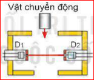
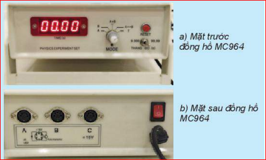
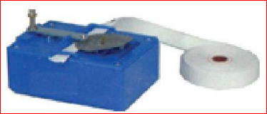
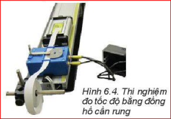
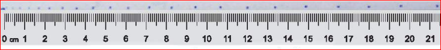
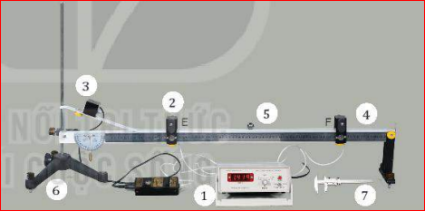

Chương II: Động học
Bài 6: Thực hành - Đo tốc độ của vật chuyển động
I. Cách đo tốc độ trong phòng thí nghiệm
Để đo tốc độ chuyển động của một vật có thể đo thời gian và quãng đường chuyển động của vật đó.
👥 Hãy thảo luận nhóm và trả lời câu hỏi sau:
- Dùng dụng cụ gì để đo quãng đường và thời gian chuyển động của vật?
- Làm thế nào đo được quãng đường đi được của vật trong một khoảng thời gian hoặc ngược lại?
- Thiết kế các phương án đo tốc độ và so sánh ưu, nhược điểm của các phương án đó.
- Câu 1: Đo quãng đường dùng thước (thước thẳng, thước cuộn...). Đo thời gian dùng đồng hồ (đồng hồ bấm giây, đồng hồ hiện số + cổng quang điện...).
- Câu 2: Ta có thể cố định quãng đường trước (đánh dấu trên máng/thước) rồi đo thời gian vật đi hết quãng đường đó. Hoặc quy định thời gian trước rồi đo quãng đường vật đi được trong thời gian đó.
- Câu 3:
- Dùng thước và đồng hồ bấm giây: Dễ làm, rẻ tiền nhưng sai số lớn do phản xạ của người bấm.
- Dùng đồng hồ hiện số và cổng quang điện: Phức tạp hơn, thiết bị đắt tiền nhưng kết quả rất chính xác.
II. Giới thiệu dụng cụ đo thời gian
Dụng cụ đo độ dài đã được học ở THCS, phần này giới thiệu các dụng cụ đo thời gian chuyên dụng.
1. Đồng hồ đo thời gian hiện số và cổng quang điện
Đồng hồ đo thời gian hiện số có thể đo thời gian chính xác đến phần nghìn giây, được điều khiển bằng cổng quang điện.

Hình 6.1. Cấu tạo cổng quang điện

Hình 6.2. Đồng hồ đo thời gian hiện số
Các chế độ MODE cơ bản:
- MODE A / B: Đo thời gian vật chắn cổng quang điện nối với ổ A hoặc ổ B.
- MODE A+B: Đo tổng hai khoảng thời gian vật chắn cổng quang điện ở A và B.
- MODE A ↔ B: Đo thời gian vật chuyển động từ cổng quang ở ổ A tới cổng quang ở ổ B.
- MODE T: Đo chu kì dao động.
❓ Câu hỏi:
Sử dụng đồng hồ đo thời gian hiện số và cổng quang điện để đo tốc độ chuyển động có ưu điểm, nhược điểm gì?
Ưu điểm: Độ chính xác rất cao (đến 0.001s), tự động đo nên loại bỏ được sai số chủ quan do phản xạ của con người.
Nhược điểm: Thiết bị cồng kềnh, cần nguồn điện, chi phí cao, việc lắp đặt và cài đặt cổng quang cần sự tỉ mỉ.
2. Thiết bị đo thời gian bằng cần rung (đồng hồ cần rung)
Sử dụng cần rung đều đặn (khoảng 50 lần/giây) đánh dấu chấm trên băng giấy gắn vào xe. Khoảng thời gian giữa 2 chấm liên tiếp là \( 0.02s \).

Hình 6.3. Đồng hồ cần rung

Hình 6.4. Thí nghiệm

Hình 6.5. Dấu chấm trên băng giấy
III. Thực hành đo tốc độ chuyển động
1. Dụng cụ thí nghiệm

Hình 6.6. Bộ thí nghiệm đo tốc độ chuyển động của viên bi thép
- (1) Đồng hồ đo thời gian hiện số.
- (2) Cổng quang điện.
- (3) Nam châm điện và công tắc kép.
- (4) Máng nhôm có thước đo góc.
- (5) Viên bi thép.
- (6) Giá đỡ 3 chân có vít chỉnh cân bằng.
- (7) Thước cặp.
2. Thiết kế phương án thí nghiệm
👥 Thảo luận nhóm lập phương án đo:
- Làm thế nào xác định tốc độ trung bình của viên bi khi đi từ cổng quang điện E đến F?
- Làm thế nào xác định tốc độ tức thời của viên bi khi đi qua cổng quang E hoặc F?
- Xác định các yếu tố có thể gây sai số và tìm cách giảm sai số.
- Tốc độ trung bình: Dùng thước đo khoảng cách s giữa E và F. Đặt đồng hồ ở chế độ MODE A↔B để đo thời gian t đi từ E đến F. Áp dụng \( v = \frac{s}{t} \).
- Tốc độ tức thời: Dùng thước cặp đo đường kính \( d \) của viên bi. Đặt đồng hồ ở chế độ MODE A (hoặc B) để đo thời gian \( t \) viên bi chắn sáng tại cổng E (hoặc F). Áp dụng \( v_t = \frac{d}{t} \).
- Sai số: Gây ra do đo đạc (thước, thước cặp), độ nghiêng máng không chuẩn, thao tác bấm thả bi chưa đều. Cách giảm: Đo nhiều lần lấy trung bình, đặt cổng quang điện chắc chắn vuông góc với máng.
3. Tiến hành thí nghiệm
Thí nghiệm 1: Đo tốc độ trung bình
Bố trí thiết bị. Đặt chế độ đồng hồ MODE A↔B. Nhả nam châm điện cho bi lăn và ghi lại thời gian t hiển thị (đo 3 lần).
Thí nghiệm 2: Đo tốc độ tức thời
Sử dụng thước cặp đo đường kính viên bi. Đặt đồng hồ chế độ MODE A (hoặc B). Cho bi lăn và đo thời gian viên bi đi qua che khuất 1 cổng quang (đo 3 lần).
⚠️ Lưu ý:
Khi cắm cổng quang điện vào ổ cắm cần xoay đúng khe định vị, cắm thẳng, không rung lắc. Kết thúc thí nghiệm cần tắt nguồn và sắp xếp dụng cụ ngăn nắp.
4. Kết quả thí nghiệm
| Bảng 6.1. Đo tốc độ trung bình | ||||
|---|---|---|---|---|
| Lần đo | Thời gian t (s) | Tốc độ \( v = s/t \) | ||
| 1 | 2 | 3 | ||
| Kết quả | ... | ... | ... | ... |
| Bảng 6.2. Đo tốc độ tức thời | ||||
|---|---|---|---|---|
| Lần đo | Thời gian t chắn cổng (s) | Tốc độ \( v_t = d/t \) | ||
| 1 | 2 | 3 | ||
| Kết quả | ... | ... | ... | ... |
Phần xử lí kết quả thí nghiệm:
- Tính tốc độ trung bình, tức thời và sai số.
- Đề xuất phương án đo tốc độ tức thời tại CẢ HAI vị trí cổng E và cổng F cùng lúc.
Gợi ý câu 2 (Đề xuất): Để đo tốc độ tức thời tại 2 vị trí cùng lúc, ta lắp 2 cổng quang điện tại E và F nối với ổ A và B. Cài đặt đồng hồ ở chế độ MODE A+B. Tuy nhiên, cách này chỉ cho ta TỔNG thời gian. Để đo riêng rẽ, ta cần đồng hồ có chế độ hiển thị kép hoặc thực hiện 2 lần thả bi độc lập (đặt MODE A lần 1, MODE B lần 2).
📌 Em đã học
- Sử dụng đồng hồ hiện số và cổng quang điện để đo thời gian chính xác (phần nghìn giây).
- Dùng 2 cổng quang điện đo thời gian vật đi giữa 2 cổng -> Tính tốc độ trung bình.
- Đo kích thước vật cản (đường kính viên bi) và thời gian chắn 1 cổng quang điện -> Tính tốc độ tức thời.
💡 Em có thể
- Mô tả được các phương án đo tốc độ thông dụng, biết đánh giá ưu nhược điểm.
- Sử dụng điện thoại thông minh quay video chuyển động rồi dùng phần mềm phân tích video để xác định tốc độ (Tracker, Vernier Video Analysis...).
🔎 Em có biết?
Sử dụng cảm biến chuyển động:
Thiết bị truyền sóng siêu âm đập vào vật và nhận sóng phản xạ. Kết nối máy tính sẽ vẽ được đồ thị và tính tốc độ tự động.

Hình 6.7. Cảm biến chuyển động

Hình 6.8. Đo bằng cảm biến
Bài Tập Vận Dụng & Củng Cố
A. Bài tập trắc nghiệm
B. Bài tập vận dụng tính toán
Bài 1: Trong thí nghiệm đo tốc độ trung bình, đo được khoảng cách giữa 2 cổng quang điện là \( s = 0.5 \text{ m} \). Thời gian vật đi từ cổng 1 đến cổng 2 hiện trên đồng hồ là \( t = 0.25 \text{ s} \). Tính tốc độ trung bình của vật.
Tốc độ trung bình được tính theo công thức:
\( v = \frac{s}{t} = \frac{0.5}{0.25} = 2 \text{ (m/s)} \)
Vậy tốc độ trung bình của vật là 2 m/s.
Bài 2: Sử dụng một viên bi thép có đường kính \( d = 2.00 \text{ cm} \). Khi cho viên bi đi qua cổng quang điện nối với đồng hồ ở MODE A, thời gian hiển thị là \( t = 0.010 \text{ s} \). Tính tốc độ tức thời của viên bi lúc đi qua cổng quang điện.
Đổi đơn vị: \( d = 2.00 \text{ cm} = 0.02 \text{ m} \).
Tốc độ tức thời được tính xấp xỉ bằng tốc độ khi vật qua cổng quang điện đoạn đường rất nhỏ (đường kính):
\( v_t = \frac{d}{t} = \frac{0.02}{0.010} = 2.0 \text{ (m/s)} \)
Vậy tốc độ tức thời của viên bi là 2 m/s.
Bài 3: Phép đo quãng đường s có sai số tỉ đối là 1.5%, phép đo thời gian t có sai số tỉ đối là 2%. Hãy tính sai số tỉ đối của phép đo tốc độ \( v = s/t \).
Theo công thức tính sai số của một thương, sai số tỉ đối của vận tốc bằng tổng sai số tỉ đối của quãng đường và thời gian:
\( \delta v = \delta s + \delta t \)
\( \Rightarrow \frac{\Delta v}{v} = 1.5\% + 2\% = 3.5\% \)
Vậy sai số tỉ đối của phép đo tốc độ là 3.5%.